Sooner or later, every body in the underhive ends up at the Rendermarch. The dead come in by the cartload, are stacked in the cold vaults and rendered down, and the Corpse Guild pays well for each one. Nobody asks where they came from.
Then word reaches The Carrion Psalm that the Delaque have been seen in the vaults. The Guild's workers are muttering, and something is stirring among the dead. To the Psalm, the Rendermarch holds the faithful departed, and they will not suffer Delaque hands meddling there. Fresh from their victory at the Banewaters, gathers his congregation and marches on the vaults before the Theatre can finish whatever they have started.
The Psalm are right. The Midnight Theatre are in the vaults. has slipped into the Rendermarch with , whose whispers are turning the Guild's workers against their masters, and , whose presence fills the vaults with a dread nobody can explain. It is quiet work, and it is going well, until the Psalm come out of the gloom. The rest of the Theatre are out in the dark, and they will have to come running.
Setup
At stake
Rendermarch (Corpse Farm) territory
Battlefield effect
Paid in Kind: gangs earn 10 credits for each enemy model they take Out of Action
Challenger
The Carrion Psalm
Table
2' × 2' - Deployment kept 6" from the centre rather than 9", and objectives placed 4" in rather than 6"
Deployment
Free for All: the winner of a roll-off picks a table quarter and their opponent takes the opposite one. Each gang deploys anywhere in its quarter at least 6" from the centre. The Carrion Psalm win the roll-off and take the containers quarter, so The Midnight Theatre deploy in the bone yard quarter.
Objective
Flank 'Em: the attacker picks a battlefield edge and places an objective at its centre, 6" in from the edge; the defender places one in the same position on the opposite edge. A gang controlling both objectives in the Check for Victory step scores 1 VP, and the first to 3 VP wins. If only one gang still has models on the battlefield, they win; if neither does, it is a draw. Here they sit at the centre of the top and bottom edges, about 4" in, just inside the walls of the manufactorum and the rendering vats.
Psalm side job
The Package: once both crews are deployed, choose a fighter to carry a package marker. From the Check for Victory step of round three onwards, if they are in base contact with a battlefield edge in the enemy deployment zone, they hand it over and the side job is done.
Theatre side job
Spread Unrest: any Active fighter without the Beast subtype may take the Graffiti (Double) action while inside the enemy deployment zone. Once any fighter has done it, the side job is done, even if that fighter later leaves the battlefield.
Crews
Surprise Attack: the attacker, The Carrion Psalm, uses Hybrid (4+4). The defender, The Midnight Theatre, starts with Custom (3) and brings on Reinforcements (7), D3 each round from the first.
Special rulesPsychoteric Node, Leash Range (12"), Burrowing
Wit
Whisper Merchant (Hanger-on, Support)
45credits
M5"
WS5+
BS4+
S3
T3
W1
I3
A1
Sv6+
Ld5
Cl7
Wil6
Int8
XP13
Weapon
SR
LR
Str
AP
L
Stub gun
6"
12"
3
-
1
Light
SkillsLie Low
Special rulesAlly of House Delaque, Useful Lies
Charges●●●●●● 6 of 6
Reinforcements (6)
Demeter
Phantom (Champion)
175credits
M5"
WS3+
BS3+
S3
T3
W2
I4
A2
Sv5+
Ld7
Cl7
Wil8
Int7
XP40
Weapon
SR
LR
Str
AP
L
Long rifle
24"
48"
4
-1
1
Knockback (6+)
WargearLas-projector (long rifle)
SkillsInspiring, Overwatch
Special rulesMaster of Whispers
Macavity
Nacht-Ghul (Champion, Loner)
190credits
M6"
WS3+
BS4+
S4
T3
W2
I5
A3
Sv5+
Ld6
Cl8
Wil8
Int7
XP55
Weapon
SR
LR
Str
AP
L
Serpent's fangs*
E
-
-
-3
1
Melee, Paired (2), Toxin (3+)
SkillsInspiring, Spring Up
Special rulesFrom the Shadows
Rumpleteaser
Ghost (Ganger, Specialist), Gunner
150credits
M5"
WS4+
BS4+
S3
T3
W1
I4
A1
Sv6+
Ld6
Cl6
Wil7
Int6
XP16
Weapon
SR
LR
Str
AP
L
Plasma gun
12"
24"
5
-2
2
Ammo (6+), Damage (2), Rapid Fire (1), Unstable
Autogun
8"
24"
3
-
1
Rapid Fire (1)
SkillsHip-shooting
Mungojerrie
Ghost (Ganger, Specialist), Gunner
105credits
M5"
WS4+
BS4+
S3
T3
W1
I4
A1
Sv6+
Ld6
Cl6
Wil7
Int6
XP13
Weapon
SR
LR
Str
AP
L
Grav gun
9"
18"
-
-
2
Ammo (5+), Blast (3"), Graviton Pulse
Autopistol
4"
12"
3
-
1
Light, Rapid Fire (1)
SkillsHip-shooting
Jellylorum
Ghost (Ganger, Specialist), Medic
70credits
M5"
WS4+
BS4+
S3
T3
W1
I4
A1
Sv6+
Ld6
Cl6
Wil7
Int6
XP19
Weapon
SR
LR
Str
AP
L
Lasgun
16"
24"
3
-
1
No traits
SkillsLie Low, Medicate
Growltiger
Ghost (Ganger, Specialist), Gunslinger
90credits
M5"
WS4+
BS4+
S3
T3
W1
I4
A1
Sv6+
Ld6
Cl6
Wil7
Int6
XP13
Weapon
SR
LR
Str
AP
L
Autopistol
4"
12"
3
-
1
Light, Rapid Fire (1)
Flechette pistol
4"
12"
-
-
1
Light, Rapid Fire (1), Toxin (3+)
SkillsGunfighter
Turn by turn
Deployment
The Midnight Theatre are already at work near the rendering vats. The Carrion Psalm come in from the north-east, leading, and spread out from the north end of the manufactorum towards the containers. When the Psalm appear in force, the workers scatter and flee.
Tucked inside 's robes are the bones of a martyred saint, and a shrine-keeper hidden beyond the bone yard is waiting to receive them.
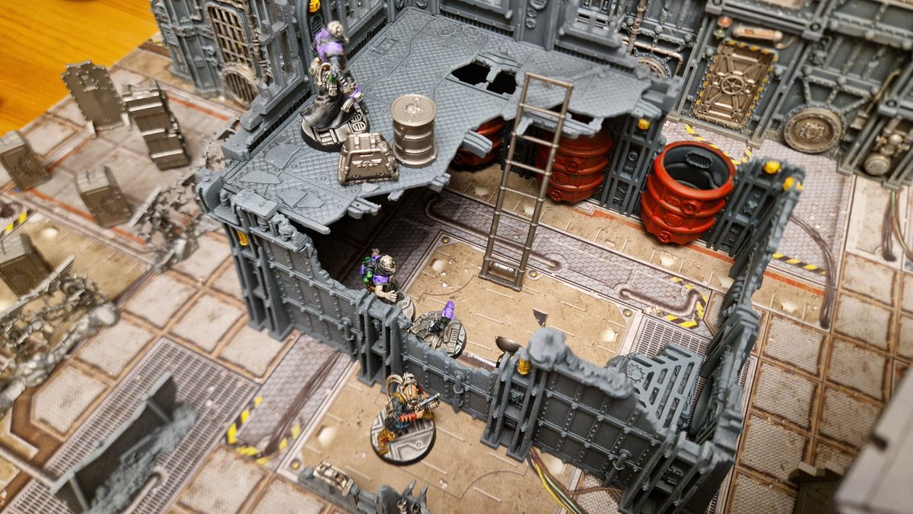
The Midnight Theatre spreading dissent.
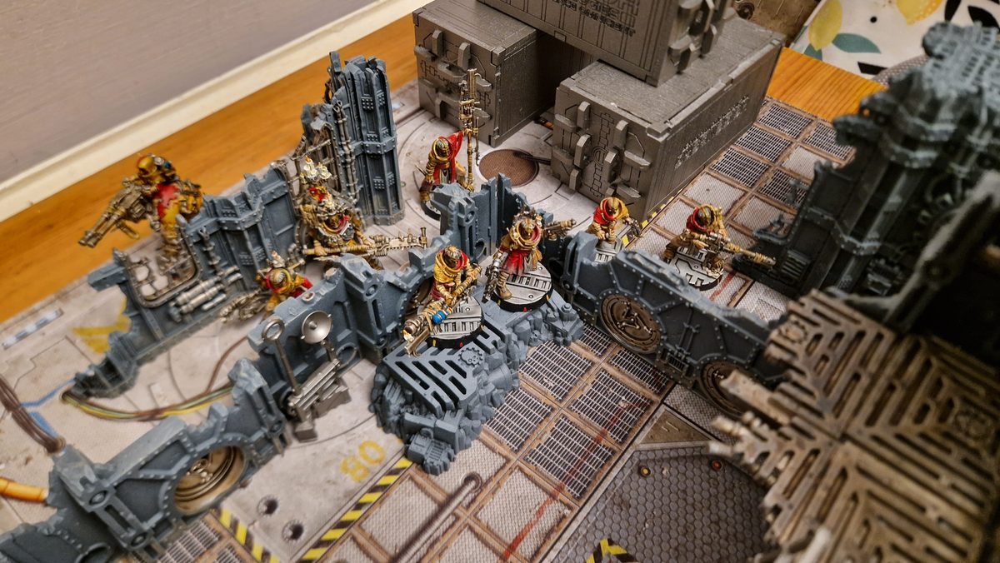
The Carrion Psalm arrive in force.
PThe Package
1
Round 1: Terrible truths
draws on the voices of the Psychoteric Choir and reaches into the dark, wrapping himself in a Perfect Void.
Deuteronomy - Perfect VoidManifests
Willpower 9Manifests
He holds the silence in place with a second effort of will.
Deuteronomy - Maintain PowerMaintains
Willpower 9 +3Maintains
Cloaked in silence, moves up to a broken window in the rendering vats, where he can watch the Cawdor come.
Across the yard, scrambles up the side of the Gothic ruin and onto its roof, looking for a clear line of fire down the street.
He is not alone for long. The rubble at the foot of the wall shifts, and bursts out of the ground right below him. Behind the walls of the vats, closes his eyes and reaches into the sniper's mind.
Mistoffelees - Terrible TruthsManifests
Willpower 7Manifests
The Terrible Truths pour into : whispers of what waits for him in the dark, and of what the Delaque already know about him.
Blessed Filth - WillpowerSubject to Insanity
Willpower 6Fails, subject to Insanity
The sniper's hands start to shake. He presses himself flat against the roof, sure that something is coming for him. Nobody on the Psalm's side saw how the Delaque did it.
rushes forward past the smoke stack, reciting a hymn of Redemption, and , and follow in his wake. stays where he is, crouched on the objective by the vats.
and push into the street towards the Wyrm, and scurries forward to hold the objective at the north end of the manufactorum.
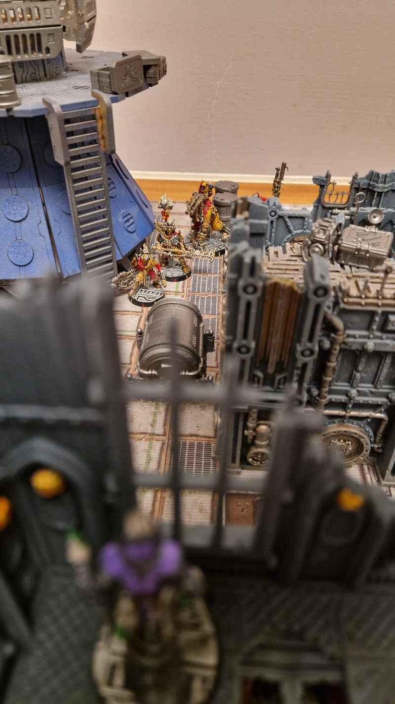
Deuteronomy watches the Cawdor come.
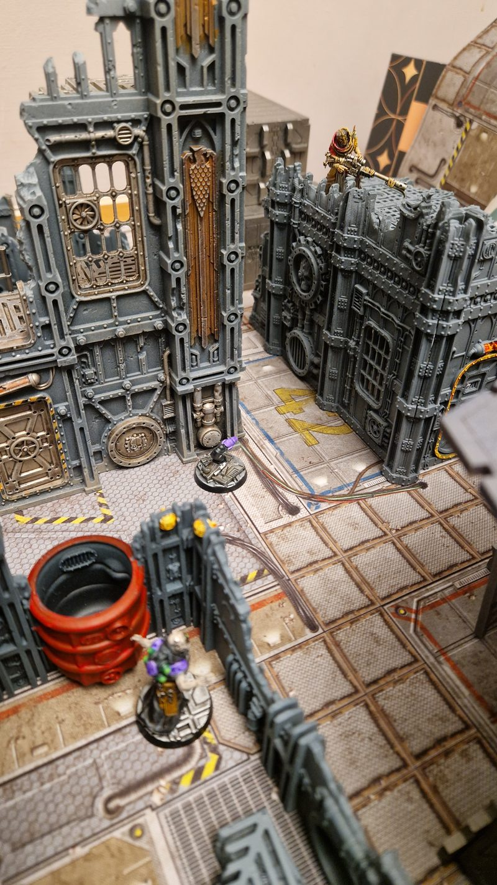
Blessed Filth on the roof, with Rumpus below and Mistoffelees behind the vats wall.
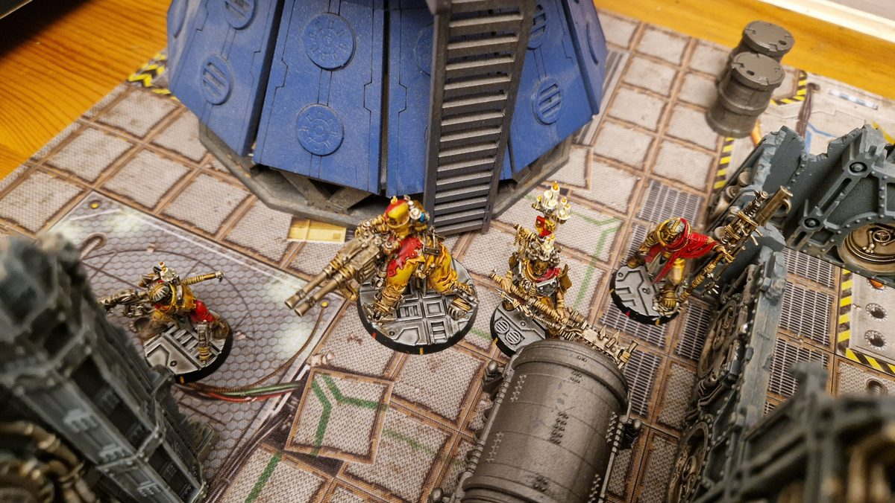
The Psalm advance past the smoke stack.
Positions at the end of round 1
PThe Package
InInsanity
VPerfect Void
End phase: Ratsong holds the north objective and Wit the south, so neither gang holds both. No VP. One reinforcement joins the Theatre: Mungojerrie brings up the grav gun through the bone yard.
2
Round 2: The air turns to lead
has seen the Wyrm in the street, and he charges, cleaver raised.
Ezekiel Crows - CleaverRumpus seriously injured
Initiative 3 +2
Cleaver
To Hit (3+, -1 out of line of sight)One hit
To Wound (3+)One wound
Save (6+ AP -1)No save
InjurySerious Injury
The cleaver comes down hard, and is left writhing in the dust.
Somehow the Wyrm drags itself away from the Firebrand, leaving a trail across the deck plates.
Rumpus - RecoveryRecovers, injured
RecoveryRecovers, injured
advances into cover by the smoke stack. He has spotted coming up through the bone yard, and he opens fire.
The round cracks off the gravestones beside the Ghost and sends him diving for cover.
answers with the grav gun. The shot goes wide, but the pulse lands on the wall beside , and the air around the Deacon turns to lead.
Mungojerrie - Grav GunElijah takes a wound
To Hit (4+)Misses, scatters onto the wall by Elijah
Strength 3One wound, suppressed
Ammo (5+)Out of ammo
Note: the graviton pulse stays in place.
is crushed against the wall, and the graviton field hangs beside him, warping everything it touches.
The pulse blocks 's path to the Delaque, so the Word Keeper moves up behind the tank instead and fires at .
Mordecai - AutopistolMisses
To Hit (3+)Misses
The shot goes wide. In the vats, keeps his concentration and holds the Void in place.
Deuteronomy - Maintain PowerMaintains
Willpower 9Maintains
Then he leans out of the window and answers with his flechette pistol.
Deuteronomy - Flechette PistolMordecai suppressed
To Hit (3+)Two hits
To Wound (3+)One wound
Save (5+ +2 cover)Saved, suppressed
Needles rattle off the tank around . His armour turns the one that finds him, but he is forced to duck, and slips back out of sight.
On the roof of the Gothic ruin, is still in the grip of the Terrible Truths. He can hear them on the ladder, he is sure of it. They are coming for him.
Blessed Filth - "They're Coming for Me"Still subject to Insanity
Willpower 6Still subject to Insanity
climbs the wall of the vats to get a sight of , and reaches for the Firebrand's mind too.
Mistoffelees - Terrible TruthsManifests
Willpower 7Manifests
But 's faith is stronger than the sniper's. He shrugs off the whispers and keeps his eyes on the Delaque.
Ezekiel Crows - WillpowerResists
Willpower 6Succeeds
steps out into the street and turns his flamer on .
Vermin Pyre - FlamerMistoffelees injured
To Wound (3+)Wounds
Save (6+ AP -1)One wound
InjuryInjured
Ammo (6+)Out of ammo
The flames wash over the wall. falls back burnt and smoking, and Vermin's flamer splutters empty.
moves up and fires his stub gun at , but the shot goes nowhere.
Wit - Stub GunMisses
To Hit (4+)Misses
pushes Amen forward, but the Stig-Shambler finds nothing to shoot at. moves up beside his Word Keeper, and stays crouched on the objective.
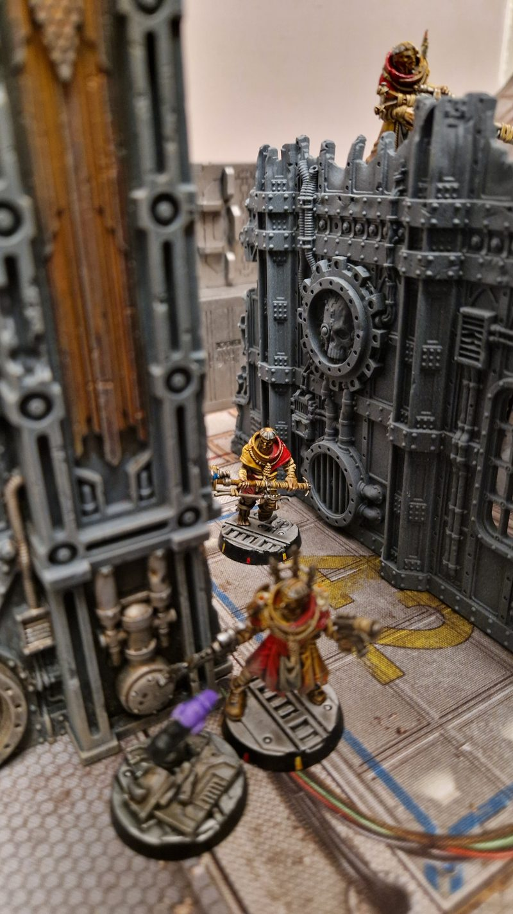
Ezekiel closes on the Wyrm.
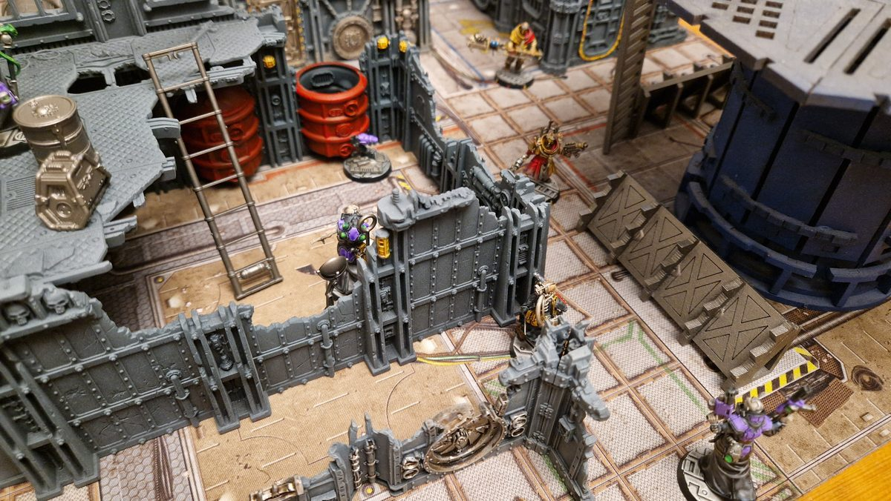
The Theatre dug in at the rendering vats.
Positions at the end of round 2
PThe Package
SSuppressed
WWounded
IInjured
AOut of ammo
InInsanity
Graviton pulse
VPerfect Void
End phase: Ratsong still holds the north objective, but no one holds the south. No VP. One reinforcement joins the Theatre: Growltiger. The graviton pulse beside Elijah fades away.
Graviton Pulse - End phaseDisperses
Remains (5+)Disperses
3
Round 3: Down among the graves
With the Cawdor closing fast, the Theatre take the initiative. is too badly burnt to focus on the Psychoteric Choir, so he draws his stub gun and fires at instead.
Mistoffelees - Stub GunVermin Pyre suppressed
To Hit (5+)Hits
To Wound (4+)Suppressed
The round forces Vermin into cover, and pulls back behind the wall with .
advances down the street, firing at as he goes.
Ezekiel Crows - AutopistolMisses
To Hit (3+)Misses
has just reached the south edge, and he answers with both pistols at once.
Growltiger - Flechette Pistol and AutopistolEzekiel suppressed
Flechette Pistol
To Hit (4+)Misses
Autopistol
To Hit (4+)Hits, out of ammo
To Wound (4+)Suppressed
The flechettes go wide, but the autopistol round slams into and knocks him down behind cover. Then 's autopistol clicks empty.
Still reeling from the graviton hit, picks himself up and moves into cover by the Ruin.
In the vats, 's hold on the Perfect Void slips.
Deuteronomy - Maintain PowerPerfect Void drops
Willpower 9Fails, Perfect Void drops
The silence breaks around him, but he moves to the window anyway and fires at .
Deuteronomy - Flechette PistolEzekiel suppressed
To Hit (3+)Hits, out of ammo
To Wound (3+)Suppressed
The needles keep the Firebrand pinned, and 's pistol is empty.
slams a fresh canister into his flamer. In the bone yard, works the grav gun's charge back up.
It does him no good. charges forward through the gravestones with Deus on the heavy stubbers, and opens fire on .
Deus and Amen - Twin-linked Heavy StubberMungojerrie seriously injured
To Hit (3+)Six hits
To Wound (3+)Four wounds
Save (6+ AP -1)No save
InjurySerious Injury
Note: Bulging Biceps to move at Initiative and fire a heavy weapon. Twin-linked to re-roll the Rapid Fire dice.
Six rounds find the Ghost, and he goes down among the graves.
fires at and misses.
Wit - Stub GunMisses
To Hit (4+)Misses
Then he ducks back into cover. His real mission still lies ahead of him: he is trying to slip past the Psalm and into their ground to spread his unrest.
and run down the street, chasing the Delaque towards the bone yard.
On the roof, tries to hide from the voices.
Blessed Filth - "Hide!"Still subject to Insanity
Willpower 6Still subject to Insanity
It doesn't work. Below him, stays on the objective.
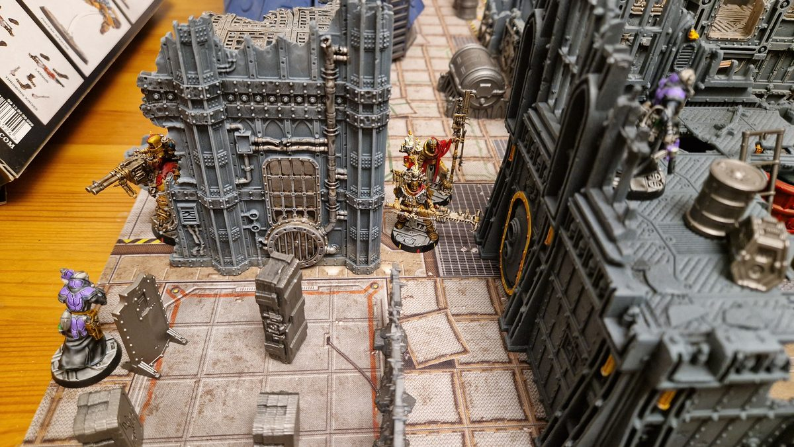
Mordecai and Gutter run down the street, with Deus and Amen behind the Ruin.
Positions at the end of round 3
PThe Package
SSuppressed
WWounded
IInjured
SISeriously Injured
AOut of ammo
InInsanity
End phase: Ratsong holds the north objective and Mistoffelees the south, so neither gang holds both. No VP. Three reinforcements join the Theatre: Demeter, Rumpleteaser and Jellylorum.
4
Round 4: Growltiger's last stand
At the start of the round, the shadows by the north wall shift, and steps out of them alongside . The Theatre keep priority.
appears from the gloom with his plasma gun levelled at .
Rumpleteaser - Plasma GunMordecai suppressed
To Hit (3+)Hits
To Wound (3+)Suppressed
Ammo (6+)Out of ammo
The bolt sears past the Word Keeper and forces him down, but the coils burn out and the plasma gun goes dark.
cracks his stimm-slug. Burning with chemical fury, he charges .
Ezekiel Crows - CleaverGrowltiger out of action
Initiative 3 +2 charge bonus
Cleaver
To Hit (3+)Three hits
To Wound (2+)Three wounds
InjuryOut of Action
Note: Bull Charge gives +1 Strength in melee. The stimm-slug gives +2 Movement, +2 Strength and +2 Toughness. Growltiger suffers a hand injury.
The cleaver falls again and again. When steps back, isn't getting up.
sees the Gunslinger fall and has to hold his nerve.
Wit - NervePasses
Cool 7Passes
In the bone yard, tries to crawl away from , but he can't get up.
Mungojerrie - RecoveryStays down
RecoveryStays down
advances and turns his flamer on .
Vermin Pyre - FlamerJellylorum suppressed
To Wound (3+)Suppressed
Ammo (5+)Passes
The flames lick at the Medic and drive him into cover. This time the flamer keeps burning.
In the vats, gathers himself and calls up the Perfect Void again.
Deuteronomy - Perfect VoidManifests
Willpower 9Manifests
This time he holds it.
Deuteronomy - Maintain PowerMaintains
Willpower 9 +3Maintains
Then he reloads his flechette pistol.
At the north end of the manufactorum, looks round and sees shapes moving in every shadow. The little Bonepicker abandons the objective, and runs in to take it.
On the roof of the Gothic ruin, is still trying to hide.
Blessed Filth - "Hide!"Still subject to Insanity
Willpower 6Still subject to Insanity
fires at , then runs.
Wit - Stub GunMisses
To Hit (4+)Misses
fires at .
Mordecai - AutopistolMisses, out of ammo
To Hit (3+)Misses, out of ammo
The shot goes wide, and the Word Keeper's autopistol runs dry.
shoots back at , but his aim is off.
Jellylorum - LasgunMisses
To Hit (4+)Misses
crash through the bone yard and turn the heavy stubbers on the fallen .
Deus and Amen - Twin-linked Heavy StubberMungojerrie still seriously injured
To Hit (3+, -1 seriously injured)Four hits
To Wound (3+)Three wounds
InjuryStill seriously injured
lies still among the graves, alive, but only just.
Behind the Psalm's lines, daubs the Theatre's mark across the containers. The Guild's workers will see it in the morning, and they will remember who left it.
charges forward. stays crouched on the south objective, and slips away towards the edge of the bone yard to deliver the saint's bones.
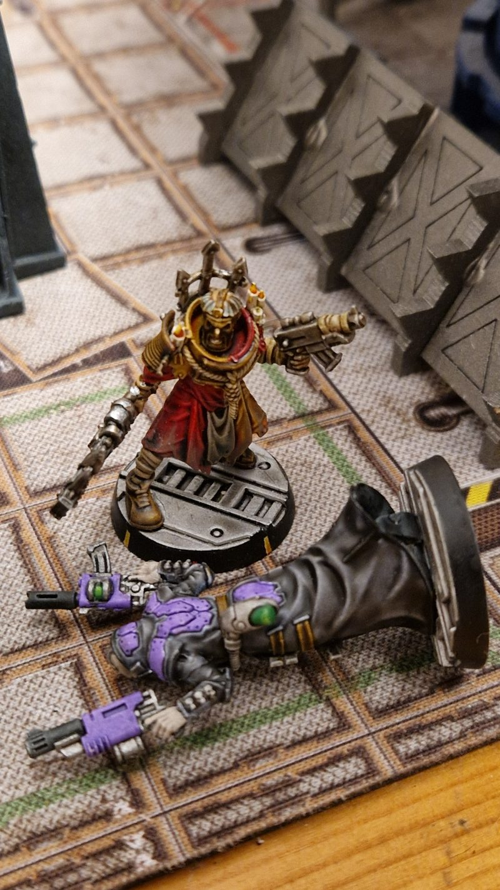
Growltiger's last stand.
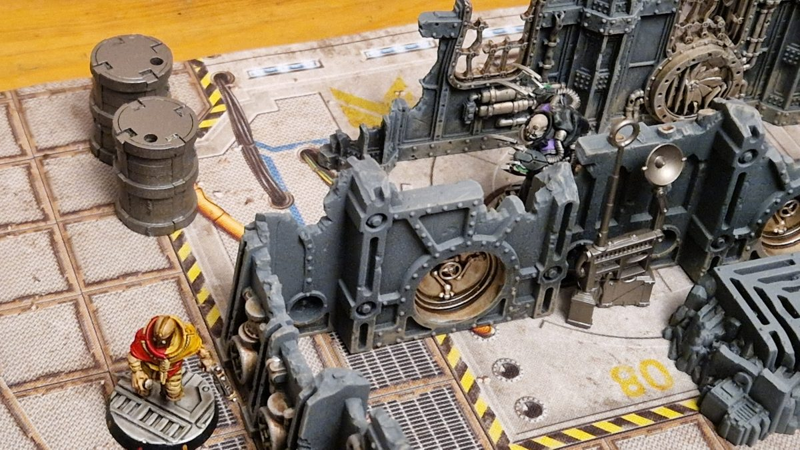
Macavity closes in on Ratsong at the north objective.
Positions at the end of round 4
SSuppressed
WWounded
IInjured
SISeriously Injured
AOut of ammo
InInsanity
💀Out of Action
VPerfect Void
End phase: the Psalm deliver the package, completing their side job. Macavity holds the north objective and Mistoffelees the south, so the Theatre hold both and score 1 VP.
The Midnight Theatre - Bottle CheckThe Theatre hold
Deuteronomy (Leadership 8)Passes
5
Round 5: Cutting their losses
With a jolt of adrenaline, rushes in behind , coaxing his plasma gun back to life as he goes, and fires.
Rumpleteaser - Plasma GunMisses, out of ammo
To Hit (3+)Misses
Ammo (6+)Out of ammo
The bolt goes wide, and the plasma gun overheats again.
's stimm-slug wears off. He shakes his head clear.
Ezekiel Crows - Stimm-slugNo effect
Stimm-slug (2+)No effect
Then he turns and charges .
Ezekiel Crows - Cleaver and AutopistolRumpleteaser injured
Initiative 3 +2 charge bonus
Cleaver
To Hit (3+)Two hits
To Wound (3+)Two wounds
InjuryInjured
Autopistol (secondary)
To Hit (3+)Hits
To Wound (4+)Suppressed
Note: the cleaver is Lethality 2.
The cleaver bites twice, and the autopistol in his other hand keeps the Ghost pinned. lashes out with his fists.
Rumpleteaser - Reaction: UnarmedSaved
Initiative 4
To Hit (3+)One hit
To Wound (4+)One wound
Save (5+)Saved
The blow glances off 's armour.
fires at , then moves back towards the objective.
Jellylorum - LasgunMisses
To Hit (4+)Misses
steps up and torches and together.
Vermin Pyre - FlamerJellylorum out of action
Wit
To Wound (3+)Suppressed
Jellylorum
To Wound (3+)Two wounds
Save (6+ AP -1)No save
InjuryOut of Action
Ammo (5+)Out of ammo
Jellylorum suffers a hand injury.
dives clear, but the flames catch full on, and the Medic falls burning.
At the north end of the manufactorum, charges .
Macavity - Serpent's FangsRatsong out of action
Initiative 5 +2 charge bonus
To Hit (3+, -1 out of line of sight)Three hits
To Wound (3+)One wound
Save (6+ AP -3)No save
InjuryOut of Action
Ratsong suffers an eye injury.
The Nacht-Ghul's fangs find the Bonepicker's face, and goes down.
In the bone yard, fall on the helpless .
Deus and Amen - Coup de GrâceMungojerrie out of action
Deus and Amen: Strength 58
Mungojerrie: Strength 38
Mungojerrie goes Out of Action with a critical injury.
's great club comes down, and doesn't move again.
holds the Perfect Void.
Deuteronomy - Maintain PowerMaintains
Willpower 9Perfect Void maintained
He fires at , but the needles go wide.
Deuteronomy - Flechette PistolMisses
To Hit (3+)Misses
fires back at .
Gutter Cantor - AutogunDeuteronomy suppressed
To Hit (4+)Two hits
To Wound (4+)One wound
Save (5+ +2 cover)Saved
Nerves of Steel (Cool 8)Fails, suppressed
The rounds spark off the window frame. 's cover holds, but his nerve doesn't, and he drops below the sill.
At the north objective, steps out of the shadows and takes it.
Its teeth tear through ' coat, and he collapses at 's feet. Not even Mr. Mistoffelees can conjure his way out of this one.
fires a last shot at , then backs away towards the objective.
Wit - Stub GunMisses
To Hit (4+)Misses
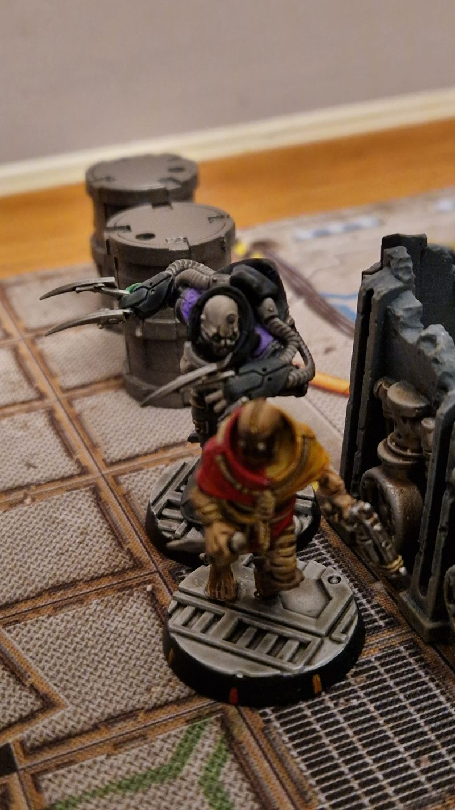
Macavity falls on Ratsong.
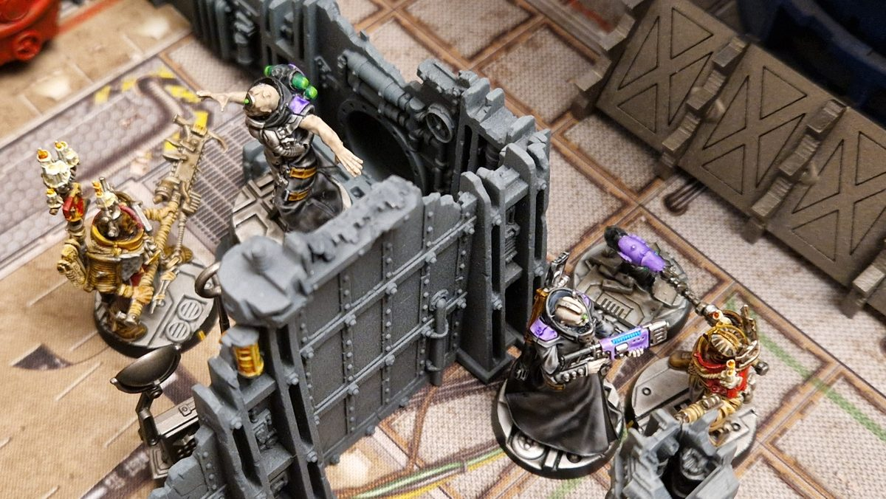
Mordecai charges Mistoffelees, with Ezekiel locked with Rumpleteaser and Rumpus.
Positions at the end of round 5
SSuppressed
WWounded
IInjured
SISeriously Injured
AOut of ammo
InInsanity
VPerfect Void
💀Out of Action
End phase: both gangs take bottle checks. The Psalm hold, but the Theatre fail theirs, and Wit runs from the field.
The Carrion Psalm - Bottle CheckThe Psalm hold
Mordecai (Leadership 8)Passes
The Midnight Theatre - Bottle CheckThe Theatre bottle, Wit flees
Deuteronomy (Leadership 8)Bottle!
Wit flees.
With their mission complete, the Theatre cut their losses and leave the Rendermarch in the hands of the Cawdor. The Carrion Psalm win.
Aftermath
The Carrion Psalm take the Rendermarch
The Theatre slip away into the dark with what they came for: the Guild's workers are restless, and the Cawdor will be hearing those whispers for a long time. But the Rendermarch belongs to the Psalm now. recovers from the Word Keeper's chainglaive. The others are not so lucky: and both carry hand injuries away from the fight, and is left critically injured by . On the Psalm's side, loses an eye to 's fangs.
Gang
Territory
Side job
Casualties
Credits
Reputation
The Carrion Psalm
Rendermarch (Corpse Farm)
The Package: completed
Ratsong: eye injury
+80
+1
The Midnight Theatre
–
Spread Unrest: completed Wit spends a charge to set the reward roll to 3
Growltiger: hand injury Jellylorum: hand injury Mungojerrie: critical injury Mistoffelees: recovers
+70
–
Experience
The Carrion Psalm
Fighter
Earned from
XP
Mordecai
Participation +1, Mistoffelees Serious Injury +1
+2
Ezekiel Crows
Participation +1, Rumpus Serious Injury +1, Growltiger Out of Action +2
+4
Elijah Emberchoir
Participation +1
+1
Vermin Pyre
Participation +1, Jellylorum Out of Action +2
+3
Blessed Filth
Participation +1
+1
Gutter Cantor
Participation +1
+1
Ratsong
Participation +1, Objective +1
+2
Deus and Amen
Participation +1, Mungojerrie Serious Injury +1, Mungojerrie Out of Action +2
+4
The Midnight Theatre
Fighter
Earned from
XP
Deuteronomy
Participation +1
+1
Demeter
Participation +1, Objective +1
+2
Macavity
Participation +1, Ratsong Out of Action +2, Objective +1